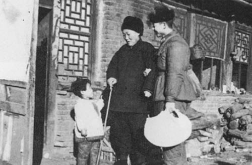
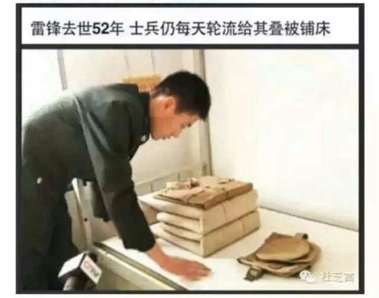
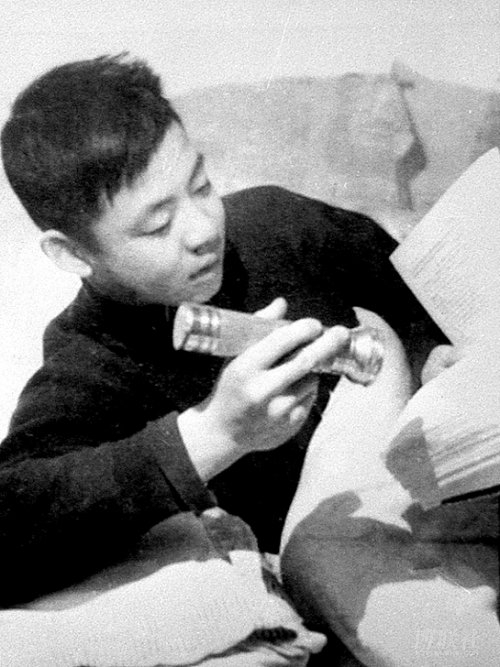
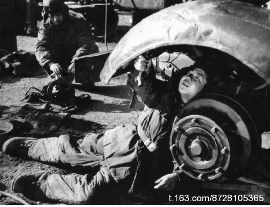

前几天又逢每年一度的“学雷锋”纪念日，转载几篇网文以及一些网友评论，让大伙儿瞧瞧真理部的嘴脸。
据说，某美国记者在中国看完“雷锋事迹图片展”之后，问了组织者三个问题：
1. 为什么当时条件艰苦的情况下，雷锋会留下这么多照片？
2. 雷锋照片中有很多是他做好事时候拍下的，难道他做好事时，身边还跟着一个摄影师？
3. 你们说雷锋做好事从来不留名，那他这些事迹你们怎么知道的？
任何独立思考的人，看完“雷锋图片展”都会询问：
1. 在大饥荒年代，为何留下200多张清晰照片？
2. 每次做好事都有摄影师拍照，是不是特权？
3. 做好事从不留名，为何光辉事迹如此众多和细腻？
4. 雷锋捐款数量不菲，有手表、皮鞋，按理比今天富翁还富，财富怎么积累的？
“雷锋送老大娘回家”中扮演老大娘的“群众演员”，是大连《新商报》副总编辑王盛波的奶奶。
据王盛波的说明，他奶奶当时人就在家里，并不需要别人送她回家，是雷锋和新闻干事季增找上门来攀谈。

（编程随想注：这是“雷锋送老大娘回家”的照片；你稍微思考一下，就知道这是【摆拍】）

（编程随想注：这是天朝官方宣传，爱思考的读者会问：是谁每天把被子弄乱的？）
一些官方的谣言
1. 周恩来去世联合国降半旗是例行公事；
2. 邓小平与菲律宾总统没有关于南海的对话；
3. 西点军校没有雷锋像；
4. 飞夺泸定桥是虚构的；
5. 黄继光堵不住机枪眼；
6. 邱少云被火烧之前已中弹身亡；
7. 赖宁没有救火，围观时眼镜掉了迷路烧死的；
8. 雷锋的照片都是摆拍的；
......
专职为雷锋拍照片的宣传干事张峻回忆说，沈阳军区为了塑造这个典型，专门为雷锋成立了拍摄小组和日记指导小组。
两年多时间里，拍摄照片300多张，平均每三天一张。
这就是“雷锋做好事不留名只留照片和日记”的真实内情。
而真相被大量揭穿，却是民众在最近几年获得有限的网络自由之后。
雷锋每次做好事，都会有一个扛着照相器材的工作人员跟着他。
编程随想注：
以下几张照片，有明显破绽，分享给大伙瞧一瞧。有兴趣的话，还可以看一下《真理部是如何 PS 照片的》。


看到中宣部号召学雷锋，让人想起美利坚开国元勋，托马斯·潘恩的一段话：
【雷锋，无所不能的雷锋】
60年代学雷锋，忠于革命忠于党。
70年代学雷锋，斗私批修不忘本。
80年代学雷锋，清除精神污染不放松。
90年代学雷锋，坚持社会主义不动摇。
2012学雷锋，弘扬“三爱”崇高理想。
2013学雷锋，实现中华民族复兴伟大梦想。
王晓渔：
对雷锋最准确的评价来自雷锋日记，他在1958年10月11日写道：“坚决地、无条件地做党的驯服工具。”
雷锋：“读毛主席的书，听毛主席的话，照毛主席的指示办事，做毛主席的好战士。”
毛主席：“向雷锋同志学习”
网友：这就是传说中的【互粉】
胡适：
一个肮脏的国家，如果人人讲规则而不是谈道德，最终会变成一个有人味儿正常国家，道德自然逐渐回归。
一个干净的国家，如果人人都不讲规则而大谈道德和高尚，天天没事儿就谈道德规范，人人大公无私，最终会堕落成为一个伪君子遍布的肮脏国家。
用雷锋解决失德问题好比用创可贴解决失贞问题。
大家反感的不是雷锋，也不是学雷锋，百姓对道德社会的渴望比谁都强烈。
反感的是试图用权力改变道德状况的荒唐；
反感的是强行把雷锋精神纳入政治范畴为己所用；
反感的是号召学雷锋的人在行为上却与雷锋精神背道而驰。
号召学雷锋已经几十年了，道德状况却每况愈下，你真不明白这是为什么，还是装不明白？
把一个已经被彻底揭穿的虚假模范抬出来学习，只能说明他们黔驴技穷。
不敢搞法治建设，只好抓道德重建；
不敢反省道德破产的原因，自然找不着重建之道。
就只好把雷锋这块散发着酸臭气息的破抹布拿出来了。
李承鹏：
雷锋是好人，可好人和榜样并非一样…
不仅要像雷锋那样给人们面包和棉裤，更要像特蕾莎那样让人们知道有权得到面包和棉裤；
不仅像雷锋那样大雨天送母子回家，更要像特蕾莎那样在苦难日子给予人们尊严和归宿。
让每一个人知道，即使活得像条狗，死的时候也该像个人。这才是榜样的力量。
官员都在学和珅，却让屁民学雷锋
【学雷锋50年，官员的变化】
雷锋少了，雷人多了；
钉子精神少了，钉子户多了；
为人民服务的少了，为人民币服务的多了；
挽着奶奶过马路的少了，挽着二奶过马路的多了；
日记里写帮过几次忙的少了，日记里写上过几次床的多了！
你让我学雷锋，我愿意; 我让你学骆家辉，你愿意么？
如果官员都是骆家辉，我就天天学雷锋。
刘晓原：
官方只会号召民众学雷锋，却不号召官员学焦裕禄。为何？
你包二奶包三奶，让俺学雷锋？
你花着公款畅游世界，让俺学雷锋？
你台上人模人样台下狗模狗样，谎话连篇，让俺学雷锋？
你三顿饭泡在酒楼吃山珍海味，让俺学雷锋？
你对上级孙子样儿对下属横眉冷对，让俺学雷锋？
得了吧，俺不学也比你强，因为俺的良心没有被狗吃了。
你吃着万元大餐坐豪车住别墅拿着高额福利到处草泥马...
我吃着地沟油孩子喝假奶粉累死累活每月三千还要上税...
你的子女都移民国外了，你却让我在国内学雷锋。
你是让我学雷锋那样早点去死吗？
你出门警车开道，我上班挤不上公交。
你一顿大餐上万，我买个萝卜还价。
你垄断资产随意涨价，我摆个小摊还被驱赶。
你子女留学一掷千金，我孩子打工没有五险一金。
你二奶开宝马去美容养颜，我老婆骑单车去看关节炎。
就这样，你还忽悠老子学雷锋做贡献，卧槽泥马勒戈壁！
听说一到学雷锋的日子，老奶奶就脱销了。
今天我去街上学了回老奶奶，帮助了十七个雷锋，我非常高兴。
“妈，你老人家去买瓶酱油，怎么才回来？”
“没办法，街上学雷锋的人太多！就门口那个红绿灯路口，我被扶过了18个来回，刚过来，又被送回对面！”
“那您是怎么回来的？”
“我实在走不动了，不小心摔倒在地。结果排队等扶我的人一下全散了，我这才一路狂奔回来。”
牛郎：亲爱的，今天不是七夕，你怎么过河来了？
织女：别提了，被一帮学雷锋的扶过来的...
昨日是学雷锋日，一部讲述雷锋从小学毕业到牺牲的成长经历的传记电影《青春雷锋》在南京首日上映，竟然出现了没一个观众买票，【零票房】的尴尬局面。
影城工作人员称：“我们也挺惊讶的，一般来说，一部电影总能卖出些票。”
【《青春雷锋》出品方怒斥“南京零票房”】
《青春雷锋》出品方潇湘电影集团有限公司回应称：
“虽然影片在南京的放映场次多安排在白天的非黄金档，但首映当天仍有90人观看。
虽然电影零售票房不理想，但该片放映以包场为主，迄今为止，全国各地已组织超过200场团体包场......”
（某网友）：
偌大的南京，影院应该有几十家，首映当天只有90人观看，这跟“零票房”有多大区别? 还好意思提“包场”——所谓“包场”，不就是公家埋单吗? 而公款埋的单能算是真正的“票房”吗？
（某网友）：
90个人观看啊，赶上阿凡达首映了！
目测全球票房会突破3000元，远超《司马南夹头历险记》！
冉云飞：
1991年出生在荷兰、一岁便移民德国的胡家华演《青春雷锋》里的雷锋，香港艳星彭丹也很早就移民，却来拍《南泥湾》。
自己出国（境）了，却回来与有关方面合作，专拍些欺世愚人的东西，大赚其钱。这和裸官以害民为鹄的做法，如出一辙。
难怪有神评说撅起的中国是个巨大的【人渣回收器】。
五岳散人：
洗脑还要自己出钱买票，现在哪里还有这样的傻逼啊！
（某网友）：
一群骗子演给一群傻子看！
（某网友）：
大家对骗人的东西产生反感，才会把怒火和厌恶放到一部电影的评分上。
俺博客上，和本文相关的帖子（需翻墙）：
《看看真理部是如何 PS 照片的》
《看看真理部对利比亚革命的忽悠》
《每周转载：看看当年的共产党是如何唱高调的（网文4篇）》
《每周转载：关于真理部的几篇旧文（网文5篇）》
★《胡平：学雷锋运动罪莫大焉》
毛澤東统治中國27年。其中，从1961年、62年到1965年、66年这一段最值得研究。
大跃进惨败，导致了人类历史上最大的人为大饥荒，暴君昏君的毛澤東不因此而垮台就已经够不可思议的了，殊不料三、五年后，毛澤東的个人威望不降反升，竟然还增至最高峰。
中外历史上那些被神化的大獨裁者，包括在延安整风运动中的毛澤東，都是干成了几件漂亮事才被吹起来的；唯独这一次与众不同，这一次，毛澤東是在犯下最愚蠢最荒谬也最残忍的滔天大罪后，反而赢得了举国上下的狂热崇拜。
本来，在62年七千人大会后，毛的错误（共產黨把它叫错误，其实应该叫罪行），至少在中共高层内部已经是心照不宣。毛在黨内的威信降到七大后的最低点；与此同时，刘少奇等务实派在黨内的地位则显著上升。如果在那时召开九大，刘少奇很可能当选黨主席，毛澤東很可能被送上名誉主席的虚位而失去实权。然而等到了65年，形势就发生了惊人的逆转。
当共產黨的老朋友，美国人斯诺再度访华时，他最感惊讶的就是举国上下对毛澤東的毫无节制的崇拜：毛的著作和相片无处不在，但没有别人的。
那么，在这段时间里，究竟发生了些什么事，使得毛澤東能迅速地摆脱被动，赢回主动，走出低谷，登上巅峰的呢？
在这段时间，毛澤東自己做了两件事。其一是，在62年秋天举行的八届十中全会上提出“千万不要忘记階級斗争”，把黨的工作中心从经济建设又扭转到階級斗争；其二是发动中苏论战，公开争夺国际共运的领导权。这两件事有效地转移了目标，动员起民族主义。暂不多论。
我这里要说的是，毛澤東想要赢得全国人民对自己的崇拜，这事不能单靠自己，这事必须倚仗别人。你想坐轿子，总得有人愿意抬轿子才成。在延安时期，主要是刘少奇大力推动对毛的个人崇拜。但现在刘少奇显然不愿意再这么干了。
按理说，给领袖歌功颂德和灌输伟大领袖的伟大思想是中宣部的事，可是现在由陆定一主管的中宣部也没有这份积极性——所以文革一开始，中宣部就被当作阎王殿砸烂了。在这段时间里，吹捧毛澤東最卖力的是林彪主持下的解放軍。
1959年庐山会议后，彭德怀被罢官，林彪接管军队工作。林彪上任后，全力以赴就做一件事，那就是高举毛澤東思想伟大红旗，把学习毛著运动推向高潮，把学毛选摆在一切工作的首位。
林彪深知树立英雄榜样的重要，榜样的力量是无穷的。中共本来就有树英雄榜样号召人民学习效仿的传统，而从63年到66年，供全国人民学习的英雄榜样基本上都是由解放軍树立的，基本上都是解放軍战士，所有英雄人物都把自己的功绩归功于毛澤東思想的教导，其中宣传最力影响最大的就是雷锋。
雷锋是部队从一开始就刻意培养树立的英雄模范。早在雷锋入伍当兵的第一年，沈阳军区的报纸就发表长篇报道称赞雷锋是“毛主席的好战士”，其后又举行“学习毛主席著作标兵雷锋模范事迹展览”。1963年2月初，人民日报，解放軍报，中國青年报等相继发表报道介绍雷锋英雄事迹。3月5日，人民日报发表社论和毛澤東亲笔题词。这就把学雷锋运动推向全国。
在60年代初期，解放軍高调介入政治。很多事都是从军队发起再推向社会的。
先是林彪说“把解放軍办成毛澤東思想的大学校”，然后毛澤東号召“全国人民学习解放軍”。把林彪那句话带进毛澤東的那句话，那就是，毛澤東号召把全国办成他的思想的大学校（文革中，“把全国办成毛澤東思想的大学校”这一口号确实很流行）。
毛澤東题词“向雷锋同志学习”。学什么呢？林彪题词说得很明白——“读毛主席的书，听毛主席的话，照毛主席的指示办事，做毛主席的好战士”（这几句话出自雷锋日记）。把林彪的题词带进毛澤東的题词，那就是，毛澤東号召全国人民读他的书，听他的话，照他的指示办事，做他的好战士。
事后我们可以很清楚地看到，由林彪发起的学毛选群众运动为毛澤東发动文革做好了最重要的思想准备和舆论准备。正是这场学毛选运动，把毛澤東送上个人崇拜的最高峰，它不但造就了千千万万狂热崇拜毛澤東的青少年，而且使解放軍这支黨军彻底变成了毛军。
众所周知，毛发动文革就仗着两条，一是毛在当时民众心目中所享有的巨大威望，一是枪杆子绝对忠于毛个人。而这两条就是通过在全黨全军全国人民中学毛选运动完成的。学雷锋运动则是其中一个非常重要的组成部分。
所以我要说，学雷锋运动罪莫大焉。我不是说雷锋是坏人罪大恶极，我说的是，学雷锋运动是掩盖毛澤東滔天罪恶，树立毛澤東绝对权威，把中國引向文革浩劫这一罪恶链条中的一个重要环节。
帮助毛澤東走出低谷送上巅峰，出力最大的莫过于林彪；林彪的办法最主要的就是提出高举毛澤東思想伟大红旗，号召和推动学毛选运动；而为学毛选运动量身定制的英雄模范中，影响最大的就是雷锋。所以学雷锋运动罪莫大焉。
今天，中共当局又在大声鼓噪学雷锋。只是在今天，他们不好再强调雷锋学毛选做毛主席的好战士。他们竭力把雷锋精神归结为“做好事”。
然而我们都知道，要是去掉了“学毛选”，“做毛主席的好战士”，雷锋就不成其为雷锋了。要是单说做好事，比雷锋做好事做得多做得好做得诚实的比比皆是，成千上万，哪轮得着把雷锋当模范呢？难道你以为，要不是当年“伟大领袖”号召学雷锋，中國人就连要做好事助人为乐都不懂了吗？
★《你有怀疑过雷锋的真实性吗？》
所谓的雷锋照片
雷锋1960年参军，至1962年牺牲，一年多时间里共拍下２００多幅照片。有那么多活生生的照片，总可以说是铁证如山了吧！
可是，话又说回来了。1980年代之前，对绝大多数中国人来说，拍照是一件很奢侈的事情，许多人一辈子只拍过一、两张照，毕业照或是结婚照。60~62年是中国经济最困难的时候，老百姓饿得生浮肿病，中南海都要吃窝窝头，全国一共饿死了3700万人。雷锋一年多时间居然能拍下200多照片，不但有工作照和学习照，甚至还有生活照。拍那么多照片，比买一辆自行车还贵。要知道，那时候的老百姓必须积攒好几年才能买得起一辆自行车的。当然，不需要他自己掏腰包，就算他想自掏腰包，凭他当小兵那每月几元钱的津贴，他也付不起。是有公家替他出钱的，可是，按照他自己说的“毫不利己，专门利人。”忍心用公家的钱和如此珍贵的胶卷，替自己大拍特拍生活照吗？一个小兵腊子得到如此的青睐，就连当年的师长、团长都未必有此高规格待遇，简直像是军区司令了。
即使到今天数码摄影十分普及的时代，有了数码相机后，拍照几乎不需要再花费成本，如果家里没有什么红白喜事、添了小宝宝，或者外出旅游，也没有多少人一年内会替自己拍上两百多张照片的。除非是有特别交情的铁哥们，单位里的摄影师决不会为一个普通小职工拍照，要是替一个普通职工拍上两百多张照片，发觉后，肯定要被单位领导骂得臭要死，“吃饱了没事干是不是？”
看来，雷锋的两百多张照片，只能有三种可能：
1．雷锋与摄影师是铁哥们，偷偷替他拍的，可是，那个时代捞上100多元钱就构成贪污犯，这样大揩国家的油，是“毫不利己”吗？
2．雷锋知道自己不久将牺牲，成为全国人民学习的榜样，预留200多张照片下来，供全国人民今后瞻仰，可是，雷锋虽然有高度的政治觉悟，但能如此先知先觉吗？
3．上级知道雷锋不久将牺牲，成为全国人民学习的榜样，为这个小兵预留200多张照片下来，供全国人民今后瞻仰？
所谓的雷锋事迹
一．雷锋的好人好事：
1．收支不平衡。庆祝抚顺市望花区人民公社成立，他送去200元；辽阳地区遭受洪水之灾，他寄去100元；战友小周的父亲病重，他寄去10元；一位妇女车票和钱丢失，他为这位妇女买了车票。他只在部队２年８个月，当时部队津贴最高每月只8元，就算他拿最高津贴标准，合计收入只有256元，仅他的一小部分事迹就已经支出三百多元。2001年还报道过雷锋在抚顺某储蓄所存款100元，雷锋捐款加存款有400元左右，另外雷锋生前有手表、皮箱、毛料衣服等当时罕见的奢侈品，包括当时在天安门前照的相，似乎消费很超前，钱从哪里来的？
2．好事从不留名吗？
报道说，雷锋做好事从来不留名。然而，有案可查的就有：雷锋1961年2月15日，给抚顺市望花区工农人民公社祝贺信；1959年12月13日，雷锋致姑嫂城公社领导的信；1960年8月28日，雷锋致辽阳市委的信；1961年1月18日，告诉看见一堆漏掉的水泥，带回装进节约箱；1961年2月 16日，雷锋写慰问信给抚顺市西部医院的全体休养员；60年6月初帮助一个老太太，请老太太吃饭，给老太太买车票。所有这些好事后面都留下7343部队 15分队战士雷锋的名字。
3．事迹前后矛盾
一次突然下雨，工地上散放着7200袋水泥，他先说自己和二十多个小伙子，用雨布和芦席盖，避免国家财产受到重大损失。但一年后又说成是“把自己的棉衣、被子拿去盖”。
4．匪夷所思的“节约故事”
报道说，雷锋的牙刷使用了七八个月了，毛都掉了一半了，还舍不得丢掉。（仅七八个月毛就掉了一半，部队用的是伪劣产品？）雷锋当兵不到一年，居然毛巾就出了个大窟窿，还继续使用（）部队的毛巾是统一摆放的，允许雷锋把大窟窿毛巾挂在营房？）雷锋穿过的袜子，补了一层又一层。最后，完全改样了，还舍不得丢（傻瓜才一层又一层补袜子，真的节约，可以拆掉旧补丁再补新补丁。）他用的部队的搪瓷脸盆、漱口杯，上面的搪瓷几乎全掉光了，也舍不得买新的（雷锋入伍一共两年零八个月，这么短时间，搪瓷怎么会掉光？）
5．荒唐的违反军纪
雷锋做报告说，自己去团里去开会，看到一个十来岁的小孩，衣服很单薄，脱下自己的棉裤，送给了他。可是，部队军纪不允许把武器、被服送给老百姓，而且，当时的棉裤是裤面和裤里加棉花缝在一起的，没有罩裤。难道雷锋穿着衬裤光着大腿到团里开会？
6．难以置信的半夜壮举
雷锋在自己的报告中说：一个严寒的冬天，雷锋等战士睡在一个简陋营房里。半夜，雷锋发现炉子座板把地板烧坏了，立刻，从外面打来水，把炉子浇灭了，又把地板上火浇灭了，把窗户、门都打开了，屋里变得非常冷。又到外面找来小木头柴，把炉子重新点燃。可是，简陋营房怎么会铺地板？炉子座板是隔绝煤炭的热辐射，防止地板被烤焦，能把地板烧坏？雷锋半夜里那么大动作，他的战友居然一个都没醒？
二．矛盾百出的忆苦思甜：
1．雷锋父亲之死
雷锋一会儿说父亲是1945年死的，一会儿又说1944年之前就死了，说他父亲是参加共产党领导的抗日运动，被日本鬼子杀害的。然而，雷锋的家乡在湖南长沙的望城县，离长沙仅十多公里远。当时，长沙附近集中了数十万国民党军队。共产党早已去了陕北和江浙的敌后，雷锋父亲怎么可能参加当地共产党的抗日活动？抗战时期，国军和日军在长沙附近进行过四次大规模会战。率领国军的是抗日名将薛岳，前三次，国民党军队打退了日军的猖狂进攻，这一时期，一直是国民党军队控制长沙及其郊区。1944年5月，日军发动第四次进攻，6月18日长沙失守。1945年4月，集结驻守长沙等地的日军，往西向国民党控制的湘西大举进攻，然而到5月，进攻日军几乎全军覆没，仓皇撤退。1945年8月，日本投降，因此，不同于广大沦陷区，日军占领长沙仅一年左右。
1944年9月1日，共产党的六届七中会议决定：以延安八路军一二０师三五九旅组成南下支队，由王震、王首道等率领南下。南下支队正是在日军向西进攻时，在其背后插入，攻下长江南岸的平江，在1945年5月，成立湘鄂赣临时区委、行政公署和军区和根据地的。这个根据地从成立到日本投降仅仅只有3个月时间。雷锋的家乡在长沙西面，离长沙市仅仅只有十多公里，就在鬼子军队严密控制的范围内。从平江到雷锋家乡相距100多公里，中间隔着日军重兵把守的长沙。从根据地建立，发展雷锋的老爸参加抗日游击队，到他老爸被捕被害，能在3个多月时间内完成吗？
2．雷锋母亲是怎样死的？
雷锋一会儿说自己母亲被唐地主强奸后自杀。换了一个场合又说，被唐七少爷强奸后自杀。而雷锋的回忆录里，唐地主和唐七少爷是不同的两个人。怎么回事？
再说，他母亲去地主家当保姆时，已经生过两个孩子，在那艰苦年代，早已成黄脸婆子了。地主老爷、少爷会看得上她？从来只听说地主老爷、少爷强暴丫环，没听说过强暴张妈、吴妈这样的妇女的。只有阿Q才会对吴妈感兴趣。而且，一般女人遭强暴后会立刻逃离。雷锋的娘却是在被强暴怀孕后，被地主赶出家门的。他娘从被强暴，到被人发觉有了身孕，至少得四五个月吧，这段时间，她还赖在地主家干什么？等待着再一次次被强暴？出于害人的封建名节观念，很多女人遭强暴后，羞愧难当，会很快自尽。而这些通常都是些黄花闺女或少妇。他娘已经是个寡妇，谈不上名节问题，哪听说过，寡妇会因强暴而自尽，而且，是在遭到强暴几个月后才羞愧自尽的？退一步讲，就算她是因羞愧而自尽的，只能苦水往自己肚子里咽，决不肯让别人知道。雷锋一个几岁的娃娃怎么可能知道娘被强暴了？由于封建名节的作祟，在1960年代，妇女离婚都被认为是丑事，即使到了今天，妇女遭强暴后，绝大多数都怕丢丑，不愿出头控告，个别勇敢的，出现在电视屏幕上也是遮着脸的。如果，雷锋的娘为此而自尽，那肯定是不愿意被人知道的。雷锋一会儿说唐地主一会儿说唐七少爷强暴他娘的互相矛盾说法，再加上其它事情上的一贯不诚实，雷锋母亲遭强暴的事肯定是子虚乌有。雷锋的母亲象其他母亲一样，是一个伟大的母亲！她的名节是完整的，如果，一定要说名节的话。雷锋到处宣扬自己的娘被强暴，不是在违背她的遗愿，丢她的脸，出她的丑吗？出于某种目的，扯一些谎，也就算了，可是，甚至往自己母亲脸上泼脏水，这种人是不是太可鄙了。
3．谁让雷锋活下来的？
得到当地一些人证实的说法是，雷锋的母亲死后，本家六叔奶奶收养了他。为了帮贴六叔奶奶家，他还经常上山去砍柴。
可是，在雷锋嘴里，却说成是：“我7岁时父母双亡……只得给地主放牛。”后来，又变成“到地主家看猪，每天看十头诸，要给猪洗澡，晚上没有地方睡，有时还要同猪睡。”
雷锋究竟是给地主放牛，还是放猪？给猪“洗澡”、晚上“陪猪睡觉”的可能性存在吗？
雷锋居然还把六叔奶奶收养他的事的“养育之恩”一笔抹煞，雷锋总说自己不忘本，他“不忘本”吗？
三．学习毛选的奇效
雷锋对自己学毛选的“钉子精神”做了高度的概括和总结：
“懂得革命道理才能做毛主席的好战士。我也积极学习毛主席著作，挤时间学，有时晚上学习太晚，头昏，我就洗一洗脸……利用开饭前后，有时连到厕所也不放过学习”。
还举例说，他学理发，开始时学不会，学毛选后，就会了。他扔手榴弹，不及格，学毛选后，就及格了。
毛选居然有如此神奇功效！
在那个年代，曾经炮制了一个又一个大谎言，诸如：一亩地可以产十万斤粮食，铁锅可以炒出钢来，超声波可以催产，到后来的盐卤可以包治百病，针灸可以麻醉等等……雷锋叔叔也是那个年代的产物。
我们都说，雷锋做好事从来不留名，可是都记在了日记里。
★《雷锋同志啊，你这哪里是在捡粪？你分明是在粪坑里！》
雷锋三次捡粪的先进事迹：
第一次：
在 1960年的一次录音报告中，雷锋说：
“比如，我在过去的一年当中，我想到，一定要在新的一年当中，多做更好更多的成绩。因此，我连过年所放的假都没有休息，我去捡大粪，初一初二那两天我一共捡大粪600来斤。我想到这也是响应D的号召，大积肥，也搞了卫生运动，也能够促进农业生产。”(这次录音报告以 “一辈子学习毛著”为题收入《雷锋全集》)
第二次：
第二年，1961年2月15日，雷锋记述道：
“今天是古历大年初一，全连的同志都高高兴兴地到和平俱乐部看剧去了，我呢？为了在春节期间给人民做一件好事，吃过早饭后，我背着粪筐，拿着铁锹到外地拣粪，大约拣了300来斤粪，我送给了抚顺望花区工农人民公社，……”
第三次：
两天后的2月17日，雷锋在日记中又写道：
“今天是春节假期的第四天，吃早饭的时候，……我一边吃饭，一边想：春节五天假期过完了，19号就要开始冬训。为了响应D的号召，支援农业第一线，争取今年农业大丰收，我还是去多积点肥，支援人民公社，这样做有两个好处。第一，以实际行动支援农业，对社员们是一个鼓舞，同时也更密切了军民关系。第二，替居民搞了卫生。因小孩在屋前屋后拉了很多大粪，看起来脏得很，我去把大粪捡起来，给居民把地扫干净，这真是一件一举两得的好事，既搞了卫生又积了肥。说干就干，我推着手推车，拿着铁锹和粪筐，走到了望花区北后屯，看见了工人住宅的屋前屋后有很多一小堆一小堆的粪便，我便立刻捡了起来。……到了下午2点钟，我捡了满满一车粪，送给了望花区工农人民公社。人民公社的负责同志们都很受感动。……”
--------------------------------
以下分析基于如下常识及假设：
1.成人每次排便100～300g重,考虑到风干、遗漏等因素，平均按每砣粪便150克计；儿童减半为75克。
2.部队春节假期期间早8点吃完早饭并出工。
3.辽宁春节期间正是寒冬季节，下午5点天黑；气温均在零下10几度，绝大部分粪便是冰冻在地上的。
4.雷锋所用的粪筐最大载粪量为60斤。
4.在平均负重30斤最高负重60斤且一边步行一边寻找目标的情况下平均步行速度为每秒1米。
5.满满一手推车的粪便为300斤（辐条式双轮手推车最小满载重量为500公斤，既1000斤，这里按300斤算)。
6.雷锋捡粪的过程中没有走任何冤枉路，即每次都由空筐开始，当到达积粪堆时刚好捡起最后一砣。
7.放下粪筐停下脚步用时2秒，铲起冰冻的粪便并装进粪筐用时8秒，背起粪筐迈出脚步用时3秒。即雷锋每铲起一砣冰冻的粪便用时13秒钟。
8.在辽宁冬天里，室外的粪便是“捡”不起来的，必须用力铲，甚至用镐刨！
9.雷锋捡粪时每碰到过拉稀坏肚子的粪便，或者碰到了也无视。
--------------------------------
第一次，1960年春节初一初二：
“初一初二那两天我一共捡大粪600来斤”，平均每天300斤。
平均每天300斤，
假设这300斤粪便里成人和儿童的粪便各占一半，
且雷锋早8点开始捡粪一直捡到下午5点天黑，一共9小时不吃不喝不休息。
设300斤粪便一共是 X 砣
则：(X/2)*150 + （X/2)*75 = 300*500
X = 1333.33砣
捡粪动作需时：13秒/砣 * 1333.33砣 = 17333.33秒，约等于4.82小时
步行时间：9小时 - 4.8小时 = 4.18小时，即15048秒
则每发现一砣粪便用时：15048秒 / 1333.33砣 = 11.29秒
如果假设4成立，则雷锋每走11步就有一砣粪便！
--------------------------------
第二次，1961年春节初一：
“今天是古历大年初一，全连的同志都高高兴兴地到和平俱乐部看剧去了，我呢？为了在春节期间给人民做一件好事，吃过早饭后，我背着粪筐，拿着铁锹到外地拣粪，大约拣了300来斤粪，我送给了抚顺望花区工农人民公社，……”
这次和第一次类似，粪量也相同。这次雷锋说明了使用的工具是粪筐和铁锹，并且“送给了抚顺望花区工农人民公社”，遗憾的是雷锋没说明捡粪的地点到花区工农人民公社的粪点有多远，如果比较远的话，除去5趟送粪的时间（一共300斤，每筐60斤），雷锋捡粪时可能就要每走8、9步就有一砣屎！
--------------------------------
第三次，1961年春节假期的第四天：
“说干就干，我推着手推车，拿着铁锹和粪筐，走到了望花区北后屯，看见了工人住宅的屋前屋后有很多一小堆一小堆的粪便， 我便立刻捡了起来。……到了下午2点钟，我捡了满满一车粪，送给了望花区工农人民公社。”
这次和前两次不同：1.这次雷锋有针对性地捡小孩的粪便（“因小孩在屋前屋后拉了很多大粪，看起来脏得很”；“有很多一小堆一小堆的粪便”）;2.雷锋用了手推车;3.明确地说明了结束的时间在下午2点。
依据雷锋前两次捡粪的粪量，以及这次对粪点的事先摸底了解，并动用了公家的运输工具手推车来判断，这次的粪量肯定不会少于前两次，如果用粪筐就可以的话，雷锋绝对不会动用公家的运输工具。因此推断此次粪量大于300斤，这里按300斤算。
假设雷锋早8点开始捡粪，不吃不喝不休息一直捡到下午2点，一共6小时。
设300斤粪便一共是 X 砣儿童粪便
则：X * 75 = 300 * 500
X = 2000砣
雷锋共用时：6小时 = 21600秒
则平均每砣粪便用时为：21600 / 2000 = 10.8秒
雷锋每铲起一砣冰冻的粪便并装进粪筐用时8秒，则雷锋找到下一砣粪的时间为：10.8 - 8 = 2.8秒，这么短的时间只能说不是在找了，这里的粪是一堆接着一堆、一砣接着一砣！
雷锋同志啊，你这哪里是在捡粪？你分明是在粪坑里！
唉~可怜的抚顺......
★《端木赐香：俺不愿意学雷锋的 N 个理由》
老实交待，俺最不愿意学雷锋了，理由也太多了：
首先，俺一听雷锋这两个字，就头大。因为一提雷鋒，俺就想到政治，一想到政治，俺就偏头疼。从小到大，俺就被政治包围了。俺跳皮筋儿，有“一二三四五，上山打老虎，老虎不吃人，专吃杜鲁门”之类的儿歌供俺伴奏。俺当时不知道杜鲁门是谁家的孩子，但是唱这儿歌时，生怕人家杜鲁门的娘听见，所以直到如今，俺还觉得对不起人家杜鲁门的娘，你说我们玩的时候都不忘诅咒别人家的孩子早死，简直心如蛇蝎啊！俺跳格子，有“打的打的打，打倒刘少奇，打的打的打，打倒王光美”之类的儿歌供俺选唱。俺当时不知道刘少奇和王光美是谁家的孩子，等俺知道了，就怀疑自己是个打手，手上沾有什么什么的鲜血。等俺上学了，读课文就是叫俺表态，我爱北京天安门！再读课文还是表态：文化大革命就是好，就是好来就是好！长期这么熏陶，俺终于患上了中国特色的政治综合症。俺第一次见老公，是这样表态的：俺对你，就象俺对四项基本原则的坚持，永远不动摇；俺老公也不含糊，说：俺对你，就象对农村联产承包责任制，五十年不变。
其次，俺一听雷锋这两个字，就犯晕。因为一提雷锋，俺就想到道德。一想到道德，俺就喘不上来气。西方谚语云：一类一思索，上帝就发笑。糊涂自己云：中国人一谈道德，全世界的人都窃笑。从小到大，俺就被道德玩懵了：走在上学的路上，丫丫非得让俺把自己的橡皮扔脚底下，然后她捡起来，兴冲冲的往学校跑，交给老师，然后老师在好人好事记录本上记下：5月6日，星期一，王小丫拾到橡皮一块，交公。然后俺得上老师办公室，报告东西丢了，再把橡皮领回来。烦死人了。更烦人的是，第二天，王小丫要礼尚往来，叫俺背着她走一段，因为俺力气大，就背她。到校后，她去找老师汇报，说俺帮老大娘背黄面来着。弄得俺不知道叫她大娘还是叫她黄面。俺一懵，上课就上不好，并且把课文上所有的表态句子加上一个“不”字，比如：我不爱北京开安门！文化大革命就不好，就不好来就不好。所以，弄得俺成为最早说不的中国人！王小波说自己在外国，洋鬼子一见他，就笑嘻嘻的问：听说你们中国现在流行说不？小波一听就羞了。俺看到这里，更是羞得无地自容，呸，羞死俺了！
第三，俺对这个“学”字特别反感。俺本善人，俺尽俺的本性就行了，为什么要学别人？好象俺天生不是一个好人似的。这导致俺在车上给老人、给抱孩子的人让位置，需要很大的勇气，俺就怕车上有人说俺学雷锋，俺本善人，非得栽赃说俺学雷锋，实质是对俺智商情商的一种侮辱。
第四，俺对雷锋有意见。一个正常的社会，应该是一个秩序井然、各司其职的社会。可是雷锋好象不明白这一点，应该警察管的事儿，比如帮老人找孩子，他管；应该列车员管的事儿，比如端水扫地的，他也管……总之，他什么都管，我就纳闷了：警察干什么去了？打麻将吗？列车员干什么去了？打毛衣吗？闹到现在，我们这个社会还是乱糟糟的，狗逮耗子猫缺位！
第五，学雷锋是有后遗症的。这个后遗症就是：当常识被升化为境界，人们就视常识为高难度动作，进而放弃它。助人为乐本是人之常情，可是它成了雷锋的道德境界，普通人就甘愿放弃它。而且，如果达不到雷锋所受到的那种政治爱戴，人们会觉得自己有所亏损进而对自己的放弃心安理得。
第六，学雷锋成了一种道德资本，甚至倡导学雷锋都能成为道德资本，这种资本与政治利润是挂钩的。所以我们会发现这样一种现象：政治位置越高，倡导学雷锋的热情越大，至少表面上如此；而学雷锋的热情越大，那么其政治利润的取值也越大，不这样，大家伙就学得没劲儿！延伸到教育系统，你会发现，如果没有表扬，学生们不但不学雷锋，连自己都不学了。最明显的例子，就是洗手不关水龙头，而关上水龙头的同学，就是学雷锋做好事了！至于官僚们，干好本职工作，都敢叫为人民服务，脸都不红一下。
第七，“亏了我一个幸福十亿人”之类的雷锋口号，不但不合人道，而且明显不懂经济学，至少不懂博奕。它让我们不明白，其实还有一种社会格局，即人人都得好处、人人都能为自身利益最大化而理直气壮地努力。所以我们直到现在，都对目前这种“幸福某一撮亏了一大堆”的社会体制表示容忍，认为天下原本这样，进而丧失要求改制的欲望！
第八，俺对政府号召，有一种本能的抵制。俺自认为是个理性的人，聪明的人，至少是个有独立思想的人，俺不愿意被人号召，而且这号召为了与时俱进，三天就换个小样儿。一会儿号召俺学习苏联老大哥，一会又号召俺斗私批修，还有什么深挖洞广积粮，特别是后者，老让俺有一种做耗子的感觉：深挖洞广积粮的，不是田鼠就是黄鼠狼啊！俺惹谁了，叫俺这么一副小样儿？学雷锋也是一样，俺天天跟在政府号召之后学学这个学学那个，就是不学自己，三百年之后，俺的后代会怎么评价俺啊：三糊涂姑奶奶，小样儿啊你！俺这人脸皮薄，受不了后人的嘲讽啊！羞死俺了！
八个理由了都，够了吧？
★网友评论
◇雷锋的造假宣传
据说，某美国记者在中国看完“雷锋事迹图片展”之后，问了组织者三个问题：
1. 为什么当时条件艰苦的情况下，雷锋会留下这么多照片？
2. 雷锋照片中有很多是他做好事时候拍下的，难道他做好事时，身边还跟着一个摄影师？
3. 你们说雷锋做好事从来不留名，那他这些事迹你们怎么知道的？
任何独立思考的人，看完“雷锋图片展”都会询问：
1. 在大饥荒年代，为何留下200多张清晰照片？
2. 每次做好事都有摄影师拍照，是不是特权？
3. 做好事从不留名，为何光辉事迹如此众多和细腻？
4. 雷锋捐款数量不菲，有手表、皮鞋，按理比今天富翁还富，财富怎么积累的？
“雷锋送老大娘回家”中扮演老大娘的“群众演员”，是大连《新商报》副总编辑王盛波的奶奶。
据王盛波的说明，他奶奶当时人就在家里，并不需要别人送她回家，是雷锋和新闻干事季增找上门来攀谈。
（编程随想注：这是“雷锋送老大娘回家”的照片；你稍微思考一下，就知道这是【摆拍】）
（编程随想注：这是天朝官方宣传，爱思考的读者会问：是谁每天把被子弄乱的？）
一些官方的谣言
1. 周恩来去世联合国降半旗是例行公事；
2. 邓小平与菲律宾总统没有关于南海的对话；
3. 西点军校没有雷锋像；
4. 飞夺泸定桥是虚构的；
5. 黄继光堵不住机枪眼；
6. 邱少云被火烧之前已中弹身亡；
7. 赖宁没有救火，围观时眼镜掉了迷路烧死的；
8. 雷锋的照片都是摆拍的；
......
专职为雷锋拍照片的宣传干事张峻回忆说，沈阳军区为了塑造这个典型，专门为雷锋成立了拍摄小组和日记指导小组。
两年多时间里，拍摄照片300多张，平均每三天一张。
这就是“雷锋做好事不留名只留照片和日记”的真实内情。
而真相被大量揭穿，却是民众在最近几年获得有限的网络自由之后。
雷锋每次做好事，都会有一个扛着照相器材的工作人员跟着他。
编程随想注：
以下几张照片，有明显破绽，分享给大伙瞧一瞧。有兴趣的话，还可以看一下《真理部是如何 PS 照片的》。
◇关于真理部
看到中宣部号召学雷锋，让人想起美利坚开国元勋，托马斯·潘恩的一段话：
一个人，如果极力宣扬他自己都不信的东西，那他就是做好了干任何坏事的准备。
【雷锋，无所不能的雷锋】
60年代学雷锋，忠于革命忠于党。
70年代学雷锋，斗私批修不忘本。
80年代学雷锋，清除精神污染不放松。
90年代学雷锋，坚持社会主义不动摇。
2012学雷锋，弘扬“三爱”崇高理想。
2013学雷锋，实现中华民族复兴伟大梦想。
王晓渔：
对雷锋最准确的评价来自雷锋日记，他在1958年10月11日写道：“坚决地、无条件地做党的驯服工具。”
雷锋：“读毛主席的书，听毛主席的话，照毛主席的指示办事，做毛主席的好战士。”
毛主席：“向雷锋同志学习”
网友：这就是传说中的【互粉】
◇关于社会道德
胡适：
一个肮脏的国家，如果人人讲规则而不是谈道德，最终会变成一个有人味儿正常国家，道德自然逐渐回归。
一个干净的国家，如果人人都不讲规则而大谈道德和高尚，天天没事儿就谈道德规范，人人大公无私，最终会堕落成为一个伪君子遍布的肮脏国家。
用雷锋解决失德问题好比用创可贴解决失贞问题。
大家反感的不是雷锋，也不是学雷锋，百姓对道德社会的渴望比谁都强烈。
反感的是试图用权力改变道德状况的荒唐；
反感的是强行把雷锋精神纳入政治范畴为己所用；
反感的是号召学雷锋的人在行为上却与雷锋精神背道而驰。
号召学雷锋已经几十年了，道德状况却每况愈下，你真不明白这是为什么，还是装不明白？
把一个已经被彻底揭穿的虚假模范抬出来学习，只能说明他们黔驴技穷。
不敢搞法治建设，只好抓道德重建；
不敢反省道德破产的原因，自然找不着重建之道。
就只好把雷锋这块散发着酸臭气息的破抹布拿出来了。
李承鹏：
雷锋是好人，可好人和榜样并非一样…
不仅要像雷锋那样给人们面包和棉裤，更要像特蕾莎那样让人们知道有权得到面包和棉裤；
不仅像雷锋那样大雨天送母子回家，更要像特蕾莎那样在苦难日子给予人们尊严和归宿。
让每一个人知道，即使活得像条狗，死的时候也该像个人。这才是榜样的力量。
◇对比当今的官员
官员都在学和珅，却让屁民学雷锋
【学雷锋50年，官员的变化】
雷锋少了，雷人多了；
钉子精神少了，钉子户多了；
为人民服务的少了，为人民币服务的多了；
挽着奶奶过马路的少了，挽着二奶过马路的多了；
日记里写帮过几次忙的少了，日记里写上过几次床的多了！
你让我学雷锋，我愿意; 我让你学骆家辉，你愿意么？
如果官员都是骆家辉，我就天天学雷锋。
刘晓原：
官方只会号召民众学雷锋，却不号召官员学焦裕禄。为何？
你包二奶包三奶，让俺学雷锋？
你花着公款畅游世界，让俺学雷锋？
你台上人模人样台下狗模狗样，谎话连篇，让俺学雷锋？
你三顿饭泡在酒楼吃山珍海味，让俺学雷锋？
你对上级孙子样儿对下属横眉冷对，让俺学雷锋？
得了吧，俺不学也比你强，因为俺的良心没有被狗吃了。
你吃着万元大餐坐豪车住别墅拿着高额福利到处草泥马...
我吃着地沟油孩子喝假奶粉累死累活每月三千还要上税...
你的子女都移民国外了，你却让我在国内学雷锋。
你是让我学雷锋那样早点去死吗？
你出门警车开道，我上班挤不上公交。
你一顿大餐上万，我买个萝卜还价。
你垄断资产随意涨价，我摆个小摊还被驱赶。
你子女留学一掷千金，我孩子打工没有五险一金。
你二奶开宝马去美容养颜，我老婆骑单车去看关节炎。
就这样，你还忽悠老子学雷锋做贡献，卧槽泥马勒戈壁！
◇关于形式主义
听说一到学雷锋的日子，老奶奶就脱销了。
今天我去街上学了回老奶奶，帮助了十七个雷锋，我非常高兴。
“妈，你老人家去买瓶酱油，怎么才回来？”
“没办法，街上学雷锋的人太多！就门口那个红绿灯路口，我被扶过了18个来回，刚过来，又被送回对面！”
“那您是怎么回来的？”
“我实在走不动了，不小心摔倒在地。结果排队等扶我的人一下全散了，我这才一路狂奔回来。”
牛郎：亲爱的，今天不是七夕，你怎么过河来了？
织女：别提了，被一帮学雷锋的扶过来的...
◇影片《青春雷锋》
昨日是学雷锋日，一部讲述雷锋从小学毕业到牺牲的成长经历的传记电影《青春雷锋》在南京首日上映，竟然出现了没一个观众买票，【零票房】的尴尬局面。
影城工作人员称：“我们也挺惊讶的，一般来说，一部电影总能卖出些票。”
【《青春雷锋》出品方怒斥“南京零票房”】
《青春雷锋》出品方潇湘电影集团有限公司回应称：
“虽然影片在南京的放映场次多安排在白天的非黄金档，但首映当天仍有90人观看。
虽然电影零售票房不理想，但该片放映以包场为主，迄今为止，全国各地已组织超过200场团体包场......”
（某网友）：
偌大的南京，影院应该有几十家，首映当天只有90人观看，这跟“零票房”有多大区别? 还好意思提“包场”——所谓“包场”，不就是公家埋单吗? 而公款埋的单能算是真正的“票房”吗？
（某网友）：
90个人观看啊，赶上阿凡达首映了！
目测全球票房会突破3000元，远超《司马南夹头历险记》！
冉云飞：
1991年出生在荷兰、一岁便移民德国的胡家华演《青春雷锋》里的雷锋，香港艳星彭丹也很早就移民，却来拍《南泥湾》。
自己出国（境）了，却回来与有关方面合作，专拍些欺世愚人的东西，大赚其钱。这和裸官以害民为鹄的做法，如出一辙。
难怪有神评说撅起的中国是个巨大的【人渣回收器】。
五岳散人：
洗脑还要自己出钱买票，现在哪里还有这样的傻逼啊！
（某网友）：
一群骗子演给一群傻子看！
（某网友）：
大家对骗人的东西产生反感，才会把怒火和厌恶放到一部电影的评分上。
俺博客上，和本文相关的帖子（需翻墙）：
《看看真理部是如何 PS 照片的》
《看看真理部对利比亚革命的忽悠》
《每周转载：看看当年的共产党是如何唱高调的（网文4篇）》
《每周转载：关于真理部的几篇旧文（网文5篇）》
版权声明
本博客所有的原创文章，作者皆保留版权。转载必须包含本声明，保持本文完整，并以超链接形式注明作者编程随想和本文原始地址：
https://program-think.blogspot.com/2013/03/weekly-share-43.html
本博客所有的原创文章，作者皆保留版权。转载必须包含本声明，保持本文完整，并以超链接形式注明作者编程随想和本文原始地址：
https://program-think.blogspot.com/2013/03/weekly-share-43.html